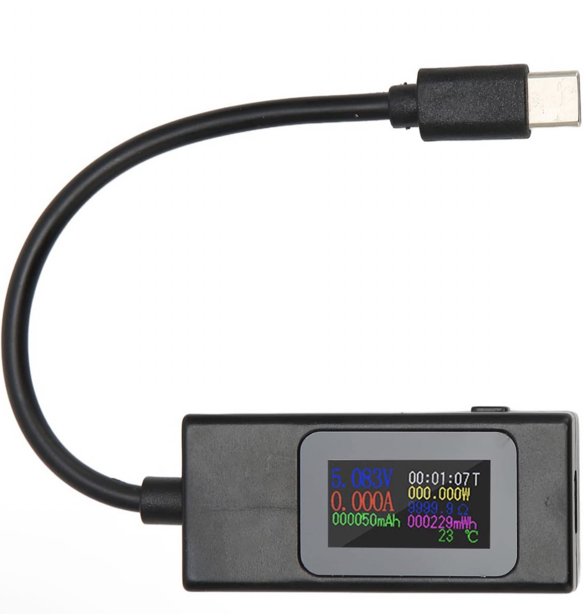
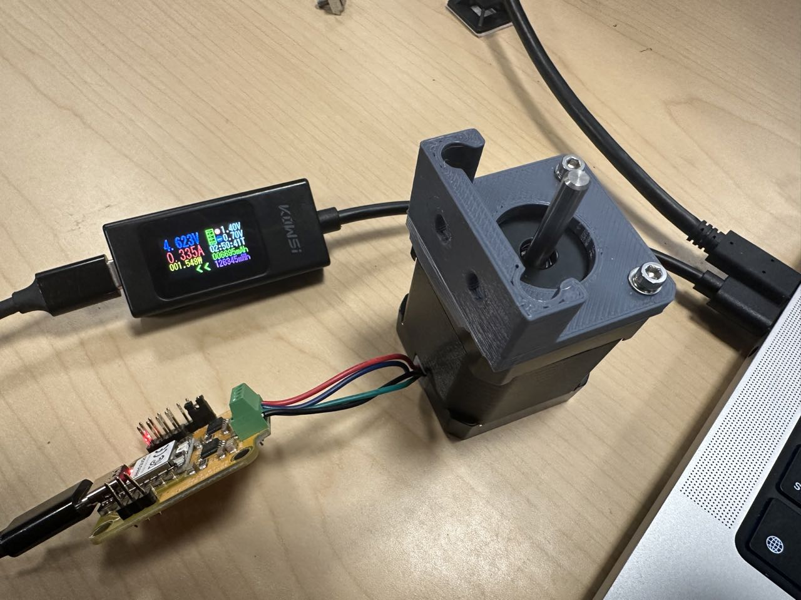
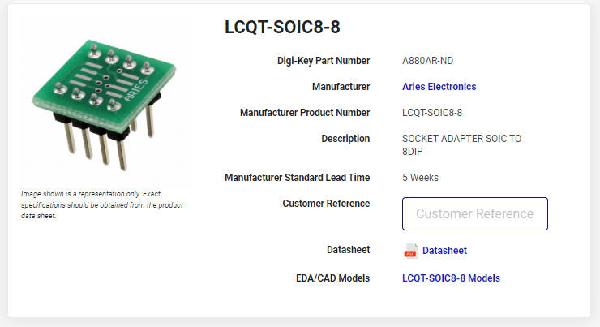
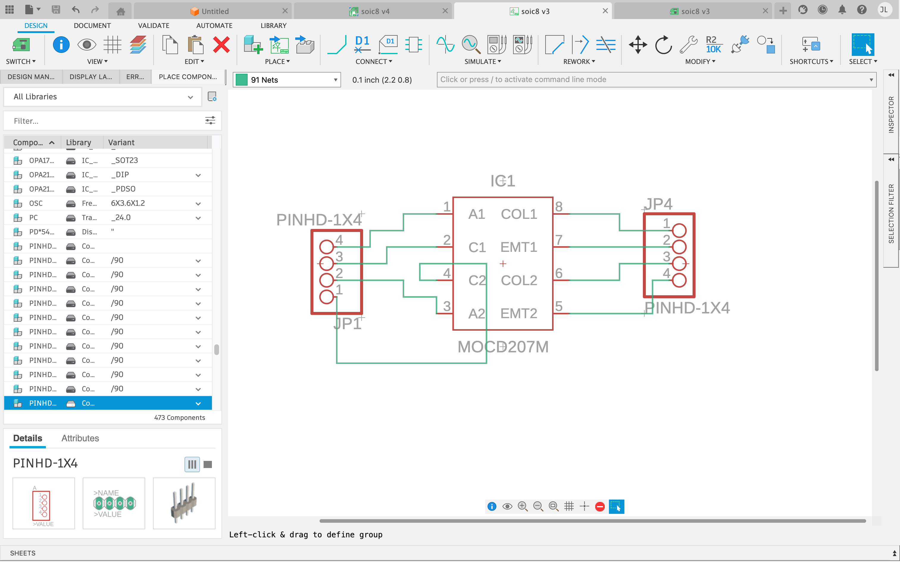
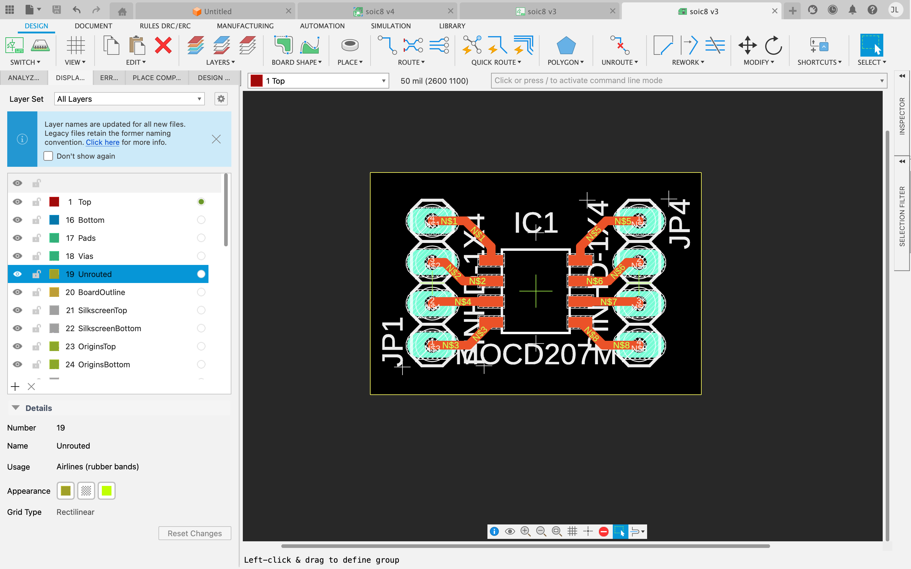

Week10 - output devices
Assignment
individual assignment:
- add an output device to a microcontroller board you’ve designed, and program it to do something
group assignment:
- measure the power consumption of an output device
Group Assignment
Vincy and I measured the power consumption of an output device, using a usb tester(thank you Alan for lending it to us) 
We measured the energy consumption of the stepper motor just after it was powered on, before rotation, during rotation, and after rotation.
- just after it was powered on - 5.3V, 0.0A, 0.0W
At this initial stage, the motor was idle, drawing no current. The voltage was stable at 5.3V, but both the current and power consumption were at 0.0A and 0.0W, respectively, indicating no active energy use.
- before rotation - 5.3V, 0.037A, 0.196W
Prior to rotation, the motor showed a slight increase in energy consumption. The voltage remained constant at 5.3V, but the current increased to 0.037A, resulting in a power consumption of 0.196W. This suggests minimal energy use in preparation for movement.
- during rotation - 4.756V, 0.325A, 1.568W
This phase marked a significant rise in power usage, reflecting the motor’s active work. The voltage slightly dropped to 4.756V, and the current surged to 0.325A. Consequently, the power consumption increased to 1.568W, indicating the energy required for the rotation of the motor.
- after rotation(being idle) - 4.623V, 0.335A, 1.548W 
Even after the rotation ceased, the motor continued to consume energy, albeit at a slightly reduced level compared to the active rotation phase. The voltage further decreased to 4.623V, and the current was measured at 0.335A, leading to a power consumption of 1.548W. This suggests that the motor still uses energy to maintain its static position after rotation.
In summary, the stepper motor’s power consumption varied across different operational stages, with the highest energy use observed during active rotation.
Individual Assignment
Idea
Following the idea of the origami/paper folding machine to conceptualize this week’s assignment, I am trying to build a key compnent of it – paper plane launcher.
Testing with Breadboard
DC Motor
Feel hard to test H bridge on breadboard, TB67H451AFNG is a soic8 chip..
  Servo Motor
I am using esp32servo.h to control servo motor with XIAO ESP32 C3
#include <ESP32Servo.h>
Servo myservo; // create servo object to control a servo
// 16 servo objects can be created on the ESP32
int pos = 0; // variable to store the servo position
int servoPin = 9;
void setup() {
// Allow allocation of all timers
ESP32PWM::allocateTimer(0);
ESP32PWM::allocateTimer(1);
ESP32PWM::allocateTimer(2);
ESP32PWM::allocateTimer(3);
myservo.setPeriodHertz(50); // standard 50 hz servo
myservo.attach(servoPin, 500, 2500); // attaches the servo on pin 18 to the servo object
// using default min/max of 1000us and 2000us
// different servos may require different min/max settings
// for an accurate 0 to 180 sweep
}
void loop() {
for (pos = 0; pos <= 180; pos += 1) { // goes from 0 degrees to 180 degrees
// in steps of 1 degree
myservo.write(pos); // tell servo to go to position in variable 'pos'
delay(15); // waits 15ms for the servo to reach the position
}
for (pos = 180; pos >= 0; pos -= 1) { // goes from 180 degrees to 0 degrees
myservo.write(pos); // tell servo to go to position in variable 'pos'
delay(15); // waits 15ms for the servo to reach the position
}
}
With reference to the data here, the default servo pulse width of the SG51R (typically 1ms to 2ms) may not provide a full 180 degrees of motion. In this case, check if you can set the servo controller to a custom pulse length and try 0.75ms to 2.25ms, I tried and did not get to 180 degrees, adjusting to 0.5ms to 2.5ms works fine.